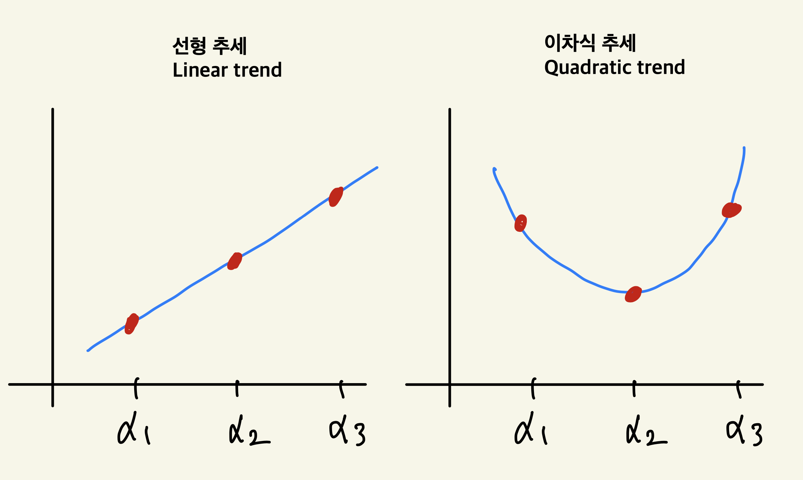
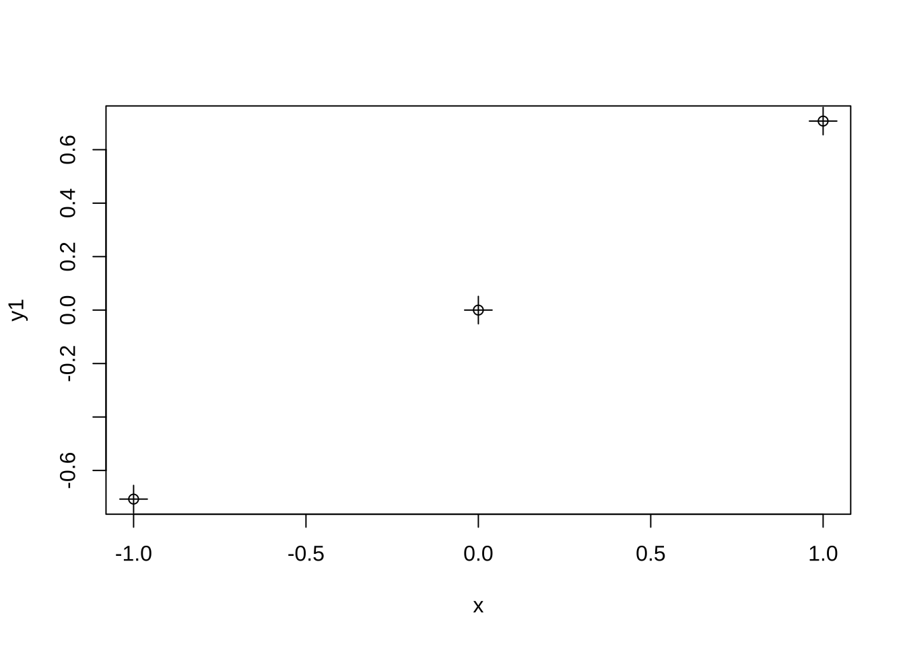
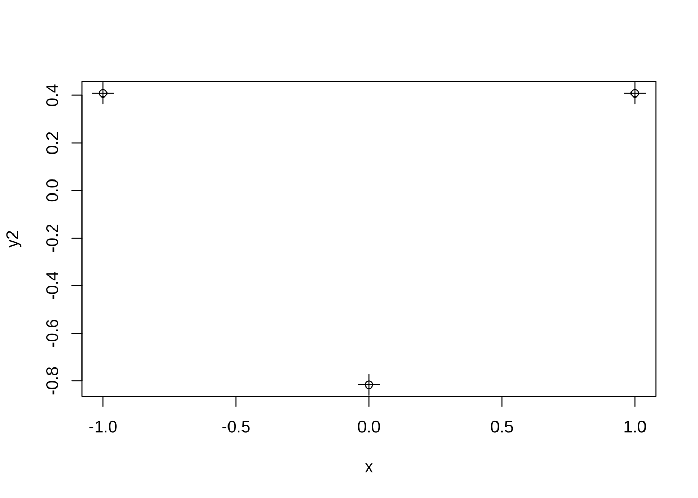
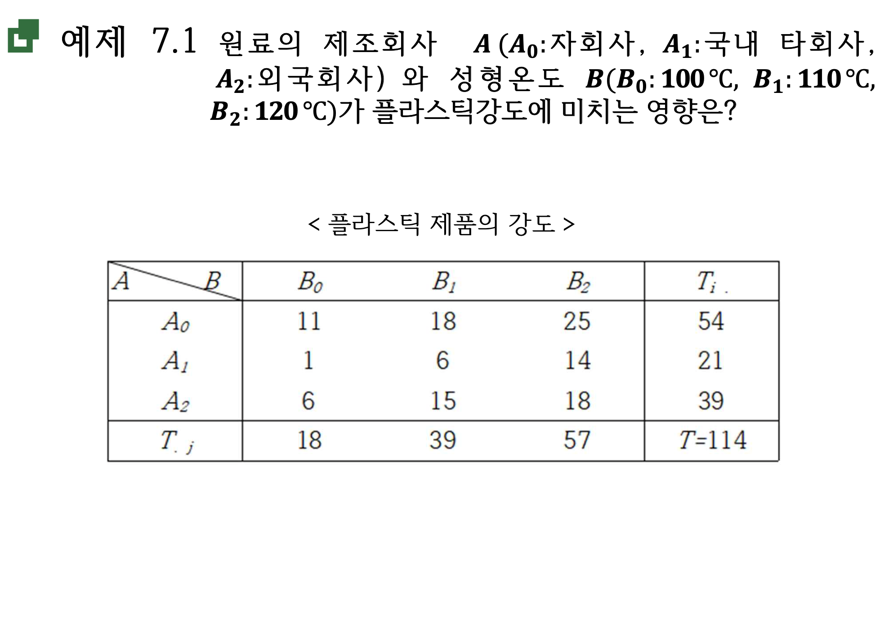
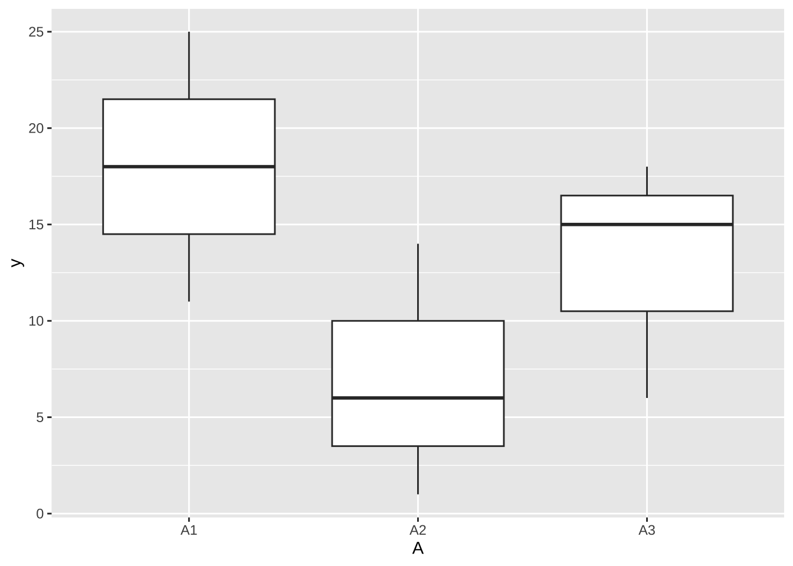
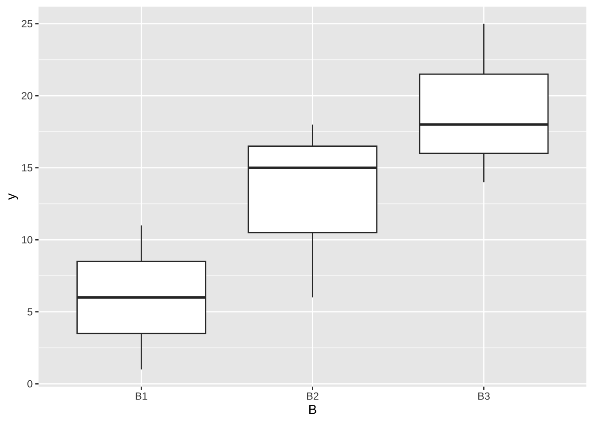
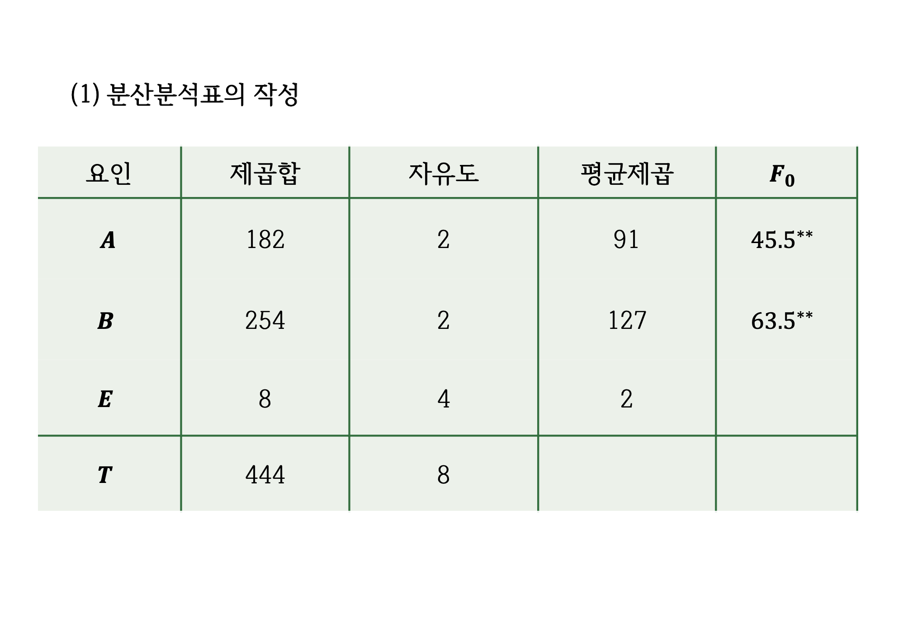
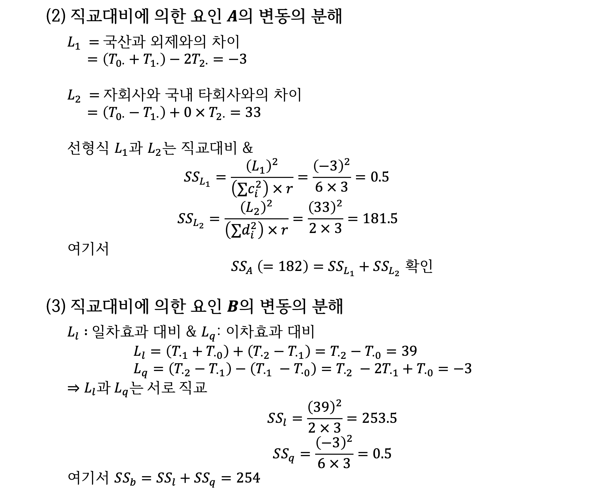
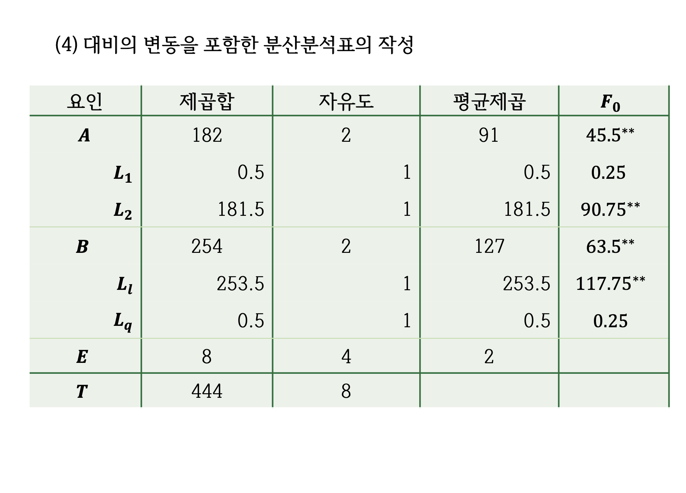

contr.poly(3) .L .Q
[1,] -7.071068e-01 0.4082483
[2,] -9.073800e-17 -0.8164966
[3,] 7.071068e-01 0.4082483자유도가 1인 카이제곱 분포 (\(\chi^2\)-distribution)은 평균이 0이고 분산이 1인 정규분포(표준 정규분포)를 따르는 확률변수의 제곱이 따르는 분포이다.
\[ z \sim N(0,1) \quad \rightarrow \quad z^2 \sim \chi^2(1) \tag{4.1}\]
만약 \(k\) 개의 확률변수 \(z_1, z_2, \dots, z_k\)가 서로 독립이고 각각 표준 정규분포 \(N(0,1)\)를 따른다면 확률변수의 제곱들의 합은 자유도가 k인 카이제곱 분포 \(\chi^2(k)\) 를 따른다.
\[ z_1, z_2, \dots, z_k \sim_{ind} N(0,1) \quad \rightarrow \quad \sum_{i=1}^k z_i^2 \sim \chi^2(k) \tag{4.2}\]
만약 \(k\) 개의 확률변수 \(z_1, z_2, \dots, z_k\)가 서로 독립이고 각각 정규분포 \(N(\mu_i,\sigma^2)\)를 따른다면 표준화 확률변수의 제곱들의 합은 자유도가 k인 카이제곱 분포 \(\chi^2(k)\) 를 따른다.
\[ \sum_{i=1}^k \left [ \frac{z_i - \mu_i}{\sigma} \right ]^2 \sim \chi^2(k) \tag{4.3}\]
다음과 같은 균형자료를 가지는 일원배치 모형을 고려하자.
\[ x_{ij} = \mu + \alpha_i + e_{ij}, \quad i=1,2,\dots, a,~~ j= 1,2,\dots, r \tag{4.4}\]
위의 일원배치 모형 식 4.4 에서 오차항 \(e_{ij}\)가 정규분포 \(N(0, \sigma^2)\) 을 따른다고 가정하자.
지금까지 우리는 다음과 같은 가설검정에 대한 통계적 추론을 배웠다.
\[ H_0: \alpha_1 = \alpha_2 =\cdots = \alpha_a \quad \text{vs.} \quad H_1: ~ \text{not } H_0\]
\[ H_0 : \alpha_i - \alpha_j =0 \quad \text{vs.} \quad H_1: \alpha_i - \alpha_j \ne 0 \tag{4.5}\]
위의 첫 번째 가설은 요인 \(A\)의 효과가 있는지에 대한 검정이며 분산분석표를 이용한 F-통계량으로 검정한다. 두 번째 가설은 각 처리 수준의 차이에 대한 검정이며 평균의 차이를 이용한 t-통계량으로 검정한다.
이제 조금 더 복잡한 가설검정을 고려해보자.
만약 수준이 3개인 경우(\(a=3\)) 첫 번째 수준과 두 번째 수준의 평균이 세 번째 수준과 같은지 검정하고 싶다고 하자 [교과서 예제 7.1 (2)]
\[ H_0 : \frac{\alpha_1 + \alpha_2}{2} = \alpha_3 \quad \text{vs.} \quad H_1: ~ \text{not } H_0 \tag{4.6}\]
또는 만약 요인이 온도인 경우 3개의 수준을 각각 100, 110, 120도로 같은 간격으로 증가시켰다. 반응변수의 평균이 일차적인 추세(linear trend)를 보이고 변화하는지 검정하고 싶을 경우가 있다. 또는 반응변수의 평균이 이차적인 추세(quadratic trend)를 가지는지 확인하고 싶은 경우도 있을 것이다.

만약 반응변수의 평균이 일차적인 추세(linear trend)를 보이면 수준의 순서에 따라서 평균이 일차적으로 증가 또는 감소하므로 두 평균의 변화를 합한 값, 즉 \((\alpha_2-\alpha_1) + (\alpha_3 - \alpha_2)\) 이 0 과 차이가 날 것이다.
\[ |(\alpha_2-\alpha_1) + (\alpha_3 - \alpha_2)| = |\alpha_1 - \alpha_3| > 0 \]
반면 반응변수의 평균이 이차적인 추세(quadratic trend)를 보이면 수준의 순서에 따라서 평균이 감소했다 증가하거나 또는 감소했다가 증가할 것이므로 두 평균의 변화를 뺀 값, 즉 \((\alpha_2-\alpha_1) - (\alpha_3 - \alpha_2)\) 이 0 과 차이가 날 것이다.
\[ |(\alpha_2-\alpha_1) - (\alpha_3 - \alpha_2)| = | \alpha_1 - 2 \alpha_2 + \alpha_3 |> 0 \]
따라서 선형식 \(\psi=\sum_i c_i \alpha_i\)를 다음과 같이 정의하면 선형식 \(\psi\)의 추정량 \(\hat \psi\)의 값이 클수록 반응변수의 평균이 선형적으로 변화하는 증거가 커진다.
\[ \psi = (\alpha_2-\alpha_1) + (\alpha_3 - \alpha_2) = -\alpha_1 + \alpha_3 \]
따라서 가설검정을 다음과 같이 세운다. 귀무 가설을 기각하면 평균이 선형적으로 변화한다는 것을 의미한다.
\[
H_0 : \alpha_1 - \alpha_3 = 0 \quad \text{ equvalently } \quad H_0: \text{ not } H_0
\tag{4.7}\]
위에서 제시한 2개의 가설 식 4.6 과 식 4.7 의 경우는 모수들의 특별한 선형조합으로 표시되는 가설이다. 이러한 모수들의 선형 조합으로 표시된 가설은 다음과 같이 일반적으로 나타낼 수 있다.
\[ H_0: ~ \sum_{i=1}^a c_i \alpha_i = 0 \tag{4.8}\]
위의 가설 식 4.6 은 일반적인 가설 식 4.8 에서 계수 \(c_i\)들이 다음과 같은 경우이며
\[ c_1 = c_2 = 1/2, ~~c_3 =-1 \]
가설 식 4.7 은 일반적인 가설 식 4.8 에서 계수 \(c_i\)들이 다음과 같은 경우이며
\[ c_1 = -1, ~ c_2= 0,~ c_3 =1 \]
물론 두 개의 처리수준을 비교하는 가설 식 4.5 도 일반적인 가설의 범주에 속한다. 이 경우 \(c_i=1\), \(c_j=-1\)이고 나머지 \(c_l=0\)인 경우이다.
이렇게 관심있는 모수들의 선형조합 \(\psi\)을 선형식(linear combination)이라고 부른다.
\[ \psi = c_1 \alpha_1 + c_2 \alpha_2 + \dots + c_a \alpha_a \tag{4.9}\]
선형식 식 4.9 에서 주어진 계수들의 합이 0 인 선형식을 특별히 대비(contrast)라고 한다.
\[ C = c_1 \alpha_1 + c_2 \alpha_2 + \dots + c_a \alpha_a, \quad \sum_{i=1}^a c_i =0 \tag{4.10}\]
이러한 대비는 계수의 합이 0 이므로 각 처리 효과들을 다양하게 비교하는데 사용될 수 있다. 가설 식 4.5 , 식 4.6 , 식 4.7 에 나타난 계수들 \(c_i\) 들은 모두 더하면 0이므로 대비라고 부른다.
만약 선형식으로 주어진 가설 식 4.8 를 검정하려면 다음과 같이 각 처리의 표본 평균들의 조합으로 이루어진 통계량을 사용할 수 있다.
\[ \hat \psi = L_* = c_1 \bar x_{1.} + c_2 \bar x_{2.} + \dots + c_a \bar x_{a.} \tag{4.11}\]
이제 식 식 4.11 의 선형 추정량 \(L_*\) 의 평균과 분산을 구해보자
\[ \begin{aligned} E(L_*) & = E ( c_1 \bar x_{1.} + c_2 \bar x_{2.} + \dots + c_a \bar x_{a.} ) \\ & = c_1 E(\bar x_{1.}) + c_2 E(\bar x_{2.}) + \dots + c_a E(\bar x_{a.}) \\ & = c_1 (\mu+ \alpha_1) + c_2 (\mu + \alpha_2) + \dots + c_a (\mu + \alpha_a) \\ & = \mu \sum_{i=1}^a c_i + c_1 \alpha_1 + c_2 \alpha_2 + \dots + c_a \alpha_a \\ & = c_1 \alpha_1 + c_2 \alpha_2 + \dots + c_a \alpha_a \end{aligned} \]
위의 유도에서 마지막 결과는 대비는 계수들의 합이 0 이라는 정의(\(\sum_{i=1}^a c_i =0\))를 이용한 것이다.
\[ \begin{aligned} V(L_*) & = V ( c_1 \bar x_{1.} + c_2 \bar x_{2.} + \dots + c_a \bar x_{a.} ) \\ & = c_1^2 V(\bar x_{1.}) + c_2^2 V(\bar x_{2.}) + \dots + c_a^2 V(\bar x_{a.}) \\ & = c_1^2 \frac{\sigma^2}{r} + c_2^2 \frac{\sigma^2}{r} + \dots + c_a^2 \frac{\sigma^2}{r} \\ & = \frac{\sigma^2}{r} \sum_{i=1}^a c_i^2 \end{aligned} \]
이제 일원배치 모형 식 4.4 에서 오차항 \(e_{ij}\)가 정규분포 를 따른 다고 가정하였으므로 관측값들의 선형조합은 정규분포를 따른다. 따라서 식 식 4.11 의 선형 추정량 \(L_*\)은 다음 같이 정규분포를 따른다.
\[ L_* \sim N \left ( \sum_i c_i \alpha_i, \frac{\sigma^2}{r} \sum_{i=1}^a c_i^2 \right ) \tag{4.12}\]
만약 선형식에 대한 가설 식 4.8 이 참이라면 선형 추정량 \(L_*\)의 평균은 0이 되고
\[ L_* \sim N \left (0, \frac{\sigma^2}{r} \sum_{i=1}^a c_i^2\right )~~ \text{ under } H_0: ~ \sum_i c_i \alpha_i =0 \tag{4.13}\]
위에서 배운 카이제곱 분포에 대한 결과 식 4.3 에 따라서 다음과 같은 결과를 얻는다.
\[ \frac{L_*^2}{\tfrac{\sigma^2}{r} \sum_{i=1}^a c_i^2 } \sim \chi^2(1) ~~\text{ under } H_0: ~ \sum_i c_i \alpha_i =0 \tag{4.14}\]
분산분석에서 구한 오차제곱합 \(SSE\)는 또한 다음과 같이 자유도가 \(n-a\)인 카이제곱 분포를 따르며 선형식 \(L_*\)과 독립이다 (독립의 이유에 대한 설명은 본 강의의 수준을 넘어서므로 생략한다.)
\[ \frac{SSE}{\sigma^2} \sim \chi^2(n-a) \tag{4.15}\]
따라서 분포에 대한 두개의 결과 식 4.14 과 식 4.15 를 이용해 보자. 귀무가설 식 4.8 이 참인 경우 카이제곱 분포를 따르는 서로 독립인 독립변수의 비는 F-분포를 따른다.
\[ F = \frac{ \left [ L_*^2 / \tfrac{\sigma^2}{r} \sum_{i=1}^a c_i^2 \right ] /1} { \left [ SSE/ \sigma^2 \right ] / (n-a)} = \left[ \frac{L_*^2}{\sum_{i=1}^a c_i^2/r } \right ] / MSE \sim F(1, n-a) ~~\text{ under } H_0 \tag{4.16}\]
따라서 대비로 표현되는 산형식에 대한 가설검정 식 4.8 은 식 식 4.16 의 \(F\) 통계량이 자유도 \((1,n-a)\)를 가진 F-분포의 상위 5% 백분위수보다 크면 귀무가설을 기각한다.
위 식 4.11 의 선형 추정량 \(L_*\) 은 각 처리에 대한 자료 합 \(T_1, T_2, \dots , T_a\)로 다음과 같이 나타낼 수 있다. 교과서 7.1 식은 선형 추정량 \(L\) 을 평균이 아닌 합으로 표시하고 있다.
각 처리에 대한 평균은 \(\bar x_{i.} = T_i / r\)이므로
\[ \begin{aligned} L & = c_1 T_1 + c_2 T_2 + \dots + c_a T_a \\ & = r( c_1 \bar x_{1.} + c_2 \bar x_{2.} + \dots + c_a \bar x_{a.} ) \\ & =r L_* \end{aligned} \]
따라서 합으로 표시한 선형식 \(L\)의 평균과 분산은 다음과 같다
\[ \begin{aligned} E(L) & = E(rL) \\ & = r E(L) \\ & = r \sum_{i=1}^a c_i \alpha_i \\ V(L) & = V(rL_*) \\ & = r^2 V(L_*) \\ & = r \sigma^2 \sum_{i=1}^a c_i^2 \end{aligned} \]
카이제곱 분포에 대한 결과 식 4.3 에 따라서 다음과 같은 결과를 얻는다.
\[ \frac{L^2}{r\sigma^2 \sum_{i=1}^a c_i^2 } \sim \chi^2(1) ~~\text{ under } H_0: ~ \sum_i c_i \alpha_i =0 \tag{4.17}\]
여기서 유의할 점은 평균으로 구성된 선형식과 합으로 구성된 선형식으로 유도된 카이제곱 통계량은 동일하다. 따라서 대비에 나타나는 게수들에 상수를 곱해줘도 검정통계량의 변화는 없다.
\[ \frac{L^2}{ r\sigma^2 \sum_{i=1}^a c_i^2} = \frac{r^2 L_*^2}{r\sigma^2 \sum_{i=1}^a c_i^2 } = \frac{L_*^2}{\tfrac{\sigma^2}{r} \sum_{i=1}^a c_i^2 } \]
이제 평균의 선형식과 같은 방법으로 합으로 표시된 선형식 \(L\)에 대하여 다음과 같은 결과를 구할 수 있다.
\[ \begin{aligned} F & = \frac{ \left [ L^2 / r \sigma^2 \sum_{i=1}^a c_i^2 \right ] /1} { \left [ SSE/ \sigma^2 \right ] / (n-a)} \\ & = \left[ \frac{L^2}{r \sum_{i=1}^a c_i^2 } \right ] / MSE \\ & = SS_L / MSE \sim F(1, n-a) ~~\text{ under } H_0 \end{aligned} \]
위에서 \(SS_L\)은 교과서 7.2 식에서 정의된 통계량과 같다.
다음과 같이 처리그룹의 합으로 표시된 2개의 서로 다른 대비 \(C_1\)과 \(C_2\)를 고려하자.
\[ C_1 = c_1 T_1 + c_2 T_2 + \dots + c_a T_a, \quad \sum_{i=1}^a c_i =0 \tag{4.18}\]
\[ C_2 = d_1 T_1 + d_2 T_2 + \dots + d_a T_a, \quad \sum_{i=1}^a d_i =0 \tag{4.19}\]
서로 다른 두 대비에서 계수들의 내적이 0 이 되는 경우 두 대비가 직교(orthogonal)한다고 말한다.
\[ \sum_{i=1}^a c_i d_i =0 \quad \rightarrow \text{ orthogonal constrast} \tag{4.20}\]
대비가 서로 직교하면 그에 따른 두 제곱합 \(SS_{C_1}\)과 \(SS_{C_2}\)는 서로 독립이다.
\[ SS_{C_1} = \frac{C_1^2}{r\sum_i c_i^2 } \quad \sim_{indep.} \quad SS_{C_2} = \frac{C_2^2}{r\sum_i d_i^2 } \]
따라서 앞 절에서 배운 각 대비에 대한 가설을 검정할 수 있는 F-통계량도 독립이다.
\[ F_1 = \frac{SS_{C_1}}{MSE} \quad \sim_{indep.} \quad F_2 = \frac{SS_{C_2}}{MSE} \]
만약 요인 \(A\)가 \(a\)개의 수준을 가지면 이 요인에 대한 직교하는 대비를 \(a-1\)개 만들 수 있다. 주의할 점은 직교하는 대비들는 유일하지 않다.
또한 각 대비 \(C_{i}\)에 대한 제곱합은 자유도가 1인 카이제곱 분포를 따르며 서로 독립이다. 더 나아가 분산분석에서 요인 A에 대한 처리제곱합 \(SS_A\)가 다은과 같이 분해된다.
\[ SS_A = SS_{C_1} + SS_{C_2} + SS_{C_3} + \dots + SS_{C_{a-1}} \]
직교하는 대비들 중에 대표적인 예로 다항 대비(polynomial contrasts)가 있다. 다항 대비는 처리 수준의 간격이 일정한 경우 평균의 변화가 선형(linear)인지, 이차적(quadratic)인지, 더 나아가 \(k\)차 다항식의 변화를 가지는지 검정할 수 있다.
다항대비의 계수들은 검정하고자 하는 변화의 추세가 강할 수록 대응하는 제곱합이 크게 되도록 설계되어 있다. 따라서 귀무가설에 대한 p-값이 크면 변화의 추세가 강하게 나타난다고 말할 수 있다.
예를 들어 3개의 수준에서 다음과 같이 2개의 다항 대비를 구할 수 있다. 아래 R 출력에 나오는 행렬의 각 열이 서로 직교하는 대비이다. 대비들의 계수의 제곱의 합이 1이 되도록(\(\sum_i c_i^2=1\)) 정규화한 결과이다.
contr.poly(3) .L .Q
[1,] -7.071068e-01 0.4082483
[2,] -9.073800e-17 -0.8164966
[3,] 7.071068e-01 0.4082483첫 번째 열이 선형 대비(linear contrast)로 계수는 다음과 같다.
\[ c_1= - \frac{1}{\sqrt{2}}, \quad c_2 =0 \quad c_3= \frac{1}{\sqrt{2}} \]
선형 대비를 그림으로 그려보면 다음과 같다.
x <- c(-1,0,1)
y1 <- contr.poly(3)[,1]
plot(x,y1 )
points(x,y1,cex=2, pch =3)
두 번째 열은 이차 대비(quadratic contrast)로 계수는 다음과 같다.
\[ c_1= \frac{1}{\sqrt{6}}, \quad c_2 = - \frac{2}{\sqrt{6}} \quad c_3= \frac{1}{\sqrt{6}} \] 이차 대비를 그림으로 그려보면 다음과 같다.
y2 <- contr.poly(3)[,2]
plot(x,y2 )
points(x,y2,cex=2, pch =3)
다음과 같이 수준의 개수가 \(5\)인 경우 4차 다항대비를 구해준다. 함수 contr.poly(k)는 \(k-1\)차 다항 대비까지 구해준다.
contr.poly(5) .L .Q .C ^4
[1,] -6.324555e-01 0.5345225 -3.162278e-01 0.1195229
[2,] -3.162278e-01 -0.2672612 6.324555e-01 -0.4780914
[3,] -3.288380e-17 -0.5345225 9.637305e-17 0.7171372
[4,] 3.162278e-01 -0.2672612 -6.324555e-01 -0.4780914
[5,] 6.324555e-01 0.5345225 3.162278e-01 0.1195229교과서 예제 7.1 에서 제조회사에 대한 비교를 하는 경우 요인의 개수가 3개이므로 2개의 직교 대비를 이용한다.
예제 7.1 에서 제조회사에 대한 비교를 하는 경우 이용한 대비의 계수는 다음과 같다.
\[ c_1= 1, ~~ c_2=1, ~~ c_3 = -2 \] \[ d_1= 1, ~~d_2=-1, ~~ d_3= 0 \]

y <- c(11,18,25,1,6,14,6,15,18)
A <- factor(c(rep(c("A1", "A2","A3"), each=3)))
B <- factor(c(rep(c("B1", "B2","B3"), 3)))
df <- data.frame(A,B,y)
df A B y
1 A1 B1 11
2 A1 B2 18
3 A1 B3 25
4 A2 B1 1
5 A2 B2 6
6 A2 B3 14
7 A3 B1 6
8 A3 B2 15
9 A3 B3 18df %>% ggplot( aes(x = A , y = y) ) + geom_boxplot()
df %>% ggplot( aes(x = B , y = y) ) + geom_boxplot()

fm1 <- aov(y~A+B, data=df)
summary(fm1) Df Sum Sq Mean Sq F value Pr(>F)
A 2 182 91 45.5 0.001773 **
B 2 254 127 63.5 0.000932 ***
Residuals 4 8 2
---
Signif. codes: 0 '***' 0.001 '**' 0.01 '*' 0.05 '.' 0.1 ' ' 1
# 직교 대비 계수 설정
c1 <- c(1, 1, -2) # 국산 대 외제
c2 <- c(1, -1, 0) # 자사 대 국내사
#직교대비 행렬 생성
matA <- cbind(c1,c2)
matA c1 c2
[1,] 1 1
[2,] 1 -1
[3,] -2 0# 요인에 대한 대비 지정
contrasts(df$A) <- matA
# 직교대비에 대한 검정
fm1 <- aov(y~A+B, data=df) # 직교대비 지정한 후에 다시 분산분석을 해주어야 한다.
summary.aov(fm1 , split=list(A=list("국산 대 외제"=1, "자사 대 국내사" = 2))) Df Sum Sq Mean Sq F value Pr(>F)
A 2 182.0 91.0 45.50 0.001773 **
A: 국산 대 외제 1 0.5 0.5 0.25 0.643330
A: 자사 대 국내사 1 181.5 181.5 90.75 0.000678 ***
B 2 254.0 127.0 63.50 0.000932 ***
Residuals 4 8.0 2.0
---
Signif. codes: 0 '***' 0.001 '**' 0.01 '*' 0.05 '.' 0.1 ' ' 1# 요인에 대한 대비 지정
contrasts(df$B) <- contr.poly(3)
# 직교대비에 대한 검정
fm1 <- aov(y~A+B, data=df) # 직교대비 지정한 후에 다시 분산분석을 해주어야 한다.
summary(fm1 , split=list(B=list("선형"=1, "이차" = 2))) Df Sum Sq Mean Sq F value Pr(>F)
A 2 182.0 91.0 45.50 0.001773 **
B 2 254.0 127.0 63.50 0.000932 ***
B: 선형 1 253.5 253.5 126.75 0.000355 ***
B: 이차 1 0.5 0.5 0.25 0.643330
Residuals 4 8.0 2.0
---
Signif. codes: 0 '***' 0.001 '**' 0.01 '*' 0.05 '.' 0.1 ' ' 1fm1 <- aov(y~A+B, data=df) # 직교대비 지정한 후에 다시 분산분석을 해주어야 한다.
summary(fm1 , split=list( A=list("국산 대 외제"=1, "자사 대 국내사" = 2), B=list("선형"=1, "이차" = 2))) Df Sum Sq Mean Sq F value Pr(>F)
A 2 182.0 91.0 45.50 0.001773 **
A: 국산 대 외제 1 0.5 0.5 0.25 0.643330
A: 자사 대 국내사 1 181.5 181.5 90.75 0.000678 ***
B 2 254.0 127.0 63.50 0.000932 ***
B: 선형 1 253.5 253.5 126.75 0.000355 ***
B: 이차 1 0.5 0.5 0.25 0.643330
Residuals 4 8.0 2.0
---
Signif. codes: 0 '***' 0.001 '**' 0.01 '*' 0.05 '.' 0.1 ' ' 1